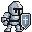
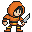
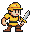
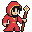
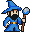
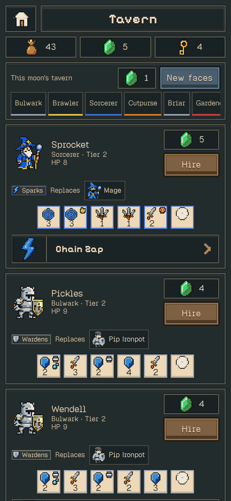
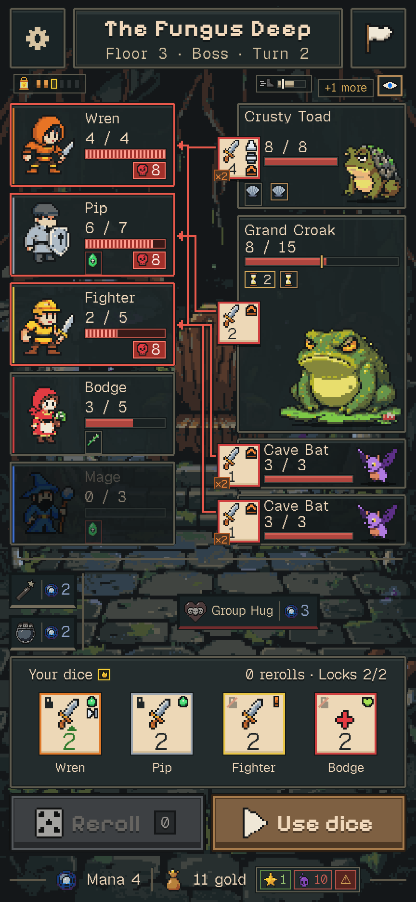

letrado.app live
A daily word puzzle game where players find all hidden Portuguese words by dragging paths through adjacent letters.
Jogo de palavras diário em português.
react · typescript · vite · firebase · python

foo@arch ~ $ cat hello.md
My name is Lucas, I am a computer engineer and hobbyist from Brazil, living in the silicon valley and working on GPU architecture at NVIDIA.
I am easy-going and enjoy working with diverse people and environments.
foo@arch ~ $ ls
Senior GPU Architect at NVIDIA. Currently architecting the secure boot of NVIDIA GPUs (Blackwell, Rubin, and next gens).
Before: Lumentum/Idea · UNICAMP · ReonV
open → studio/Hobbyist with several projects in GitHub exploring ML, LLM, optimization problems, games, full stack apps.
open →foo@arch ~ $ cat work.md
## Now
Senior GPU Architect
NVIDIA
Over 7 years of experience in system architecture for ASIC, GPU, and SoC devices for both graphics and AI/ML workloads.
Currently architecting the secure boot of NVIDIA GPUs (Blackwell, Rubin, and next gens), coordinating across many hardware, firmware, and software teams to deliver a secure initialization of the system, from power-up to SW.
## Before
Developing embedded solutions and hardware-software co-design projects for photonic devices.
With a specialization in Computer Architecture and Energy Efficiency.
One of the first RISC-V processors published from Brazil.
see it in the studio →foo@arch ~/studio $ ls
Hobbyist with several projects in GitHub exploring ML, LLM, optimization problems, games, full stack apps.
A daily word puzzle game where players find all hidden Portuguese words by dragging paths through adjacent letters.
react · firebase · python
Locations, crafted materials, and a sense of place sit at the heart of the experience.
react · pixijs · tauri · fastapi
Hunting things and rolling down. A portrait pixel-art dice roguelike with extraction.
deaddice.com · typescript · pixijsOne of the first RISC-V processors published from Brazil.
vhdl · risc-v rv32i · grlib
Your AI Coding Assistant's Long-Term Memory.
python · mcp · qdrantA daily word puzzle game where players find all hidden Portuguese words by dragging paths through adjacent letters.
Jogo de palavras diário em português.
react · typescript · vite · firebase · python
Locations, crafted materials, and a sense of place sit at the heart of the experience.
Trials of Olyrion is now playable in a small, invitation-based closed beta. The hosted client is running at play.trialsofolyrion.com for invited players.
react · pixijs · tauri · fastapi · postgresql · redis

Hunting things and rolling down.
Caçando bicho e rolando buraco abaixo.
Lower your heroes into the hole each night, and decide how far down they go.
A portrait pixel-art dice roguelike with extraction: village → expedition → extract or descend. A fixed party of five climbs dungeons of four floors, each a branching map ending in a boss checkpoint.
The first 2 expeditions are free, with no ads.
typescript · pixijs · vite · capacitor · Foo Game Studios









One of the first RISC-V processors published from Brazil.
ReonV is a modified version of the Leon3, a synthesisable VHDL model of a 32-bit processor originally compliant with the SPARC V8 architecture, now changed to RISC-V ISA.
ReonV changed the Leon3 7-stage integer pipeline from SPARC to RISC-V, maintaining all other IP cores and resources provided by GRLIB IP Library untouched.
vhdl · risc-v rv32i · grlib · fpga
Your AI Coding Assistant's Long-Term Memory.
Heimdall gives your LLM a persistent, growing, cognitive memory of your specific codebase, lessons and memories carry over time.
$ pip install heimdall-mcp $ heimdall project init
python · mcp · qdrant
A dark, high-contrast pastel-neon colorscheme for Neovim.
This page wears it.
lua · neovim


A visual and constructive framework for teaching digital circuits.
javascript · circuitly.app
keys
the mouse works too